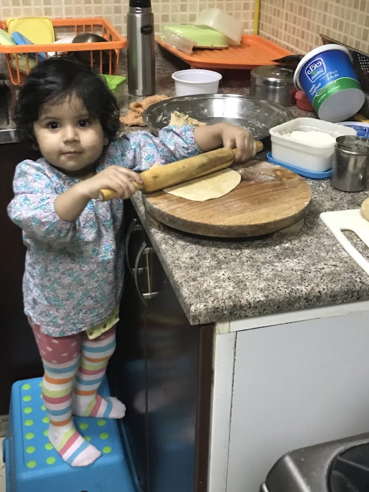
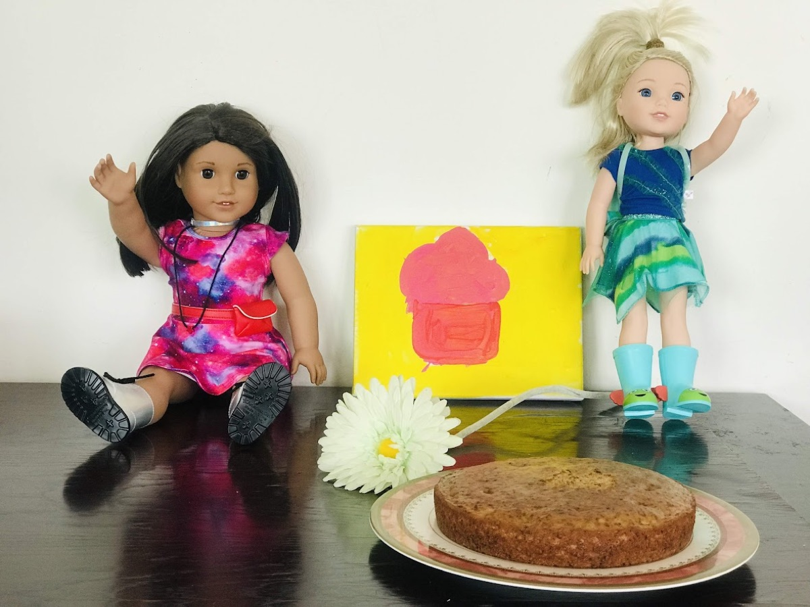
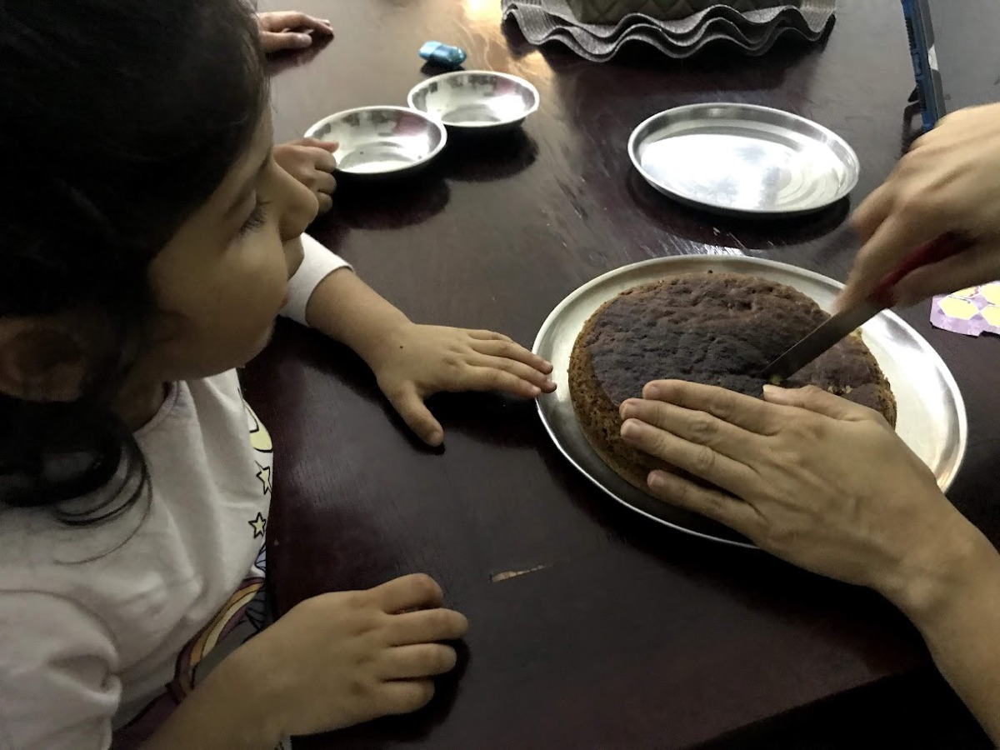
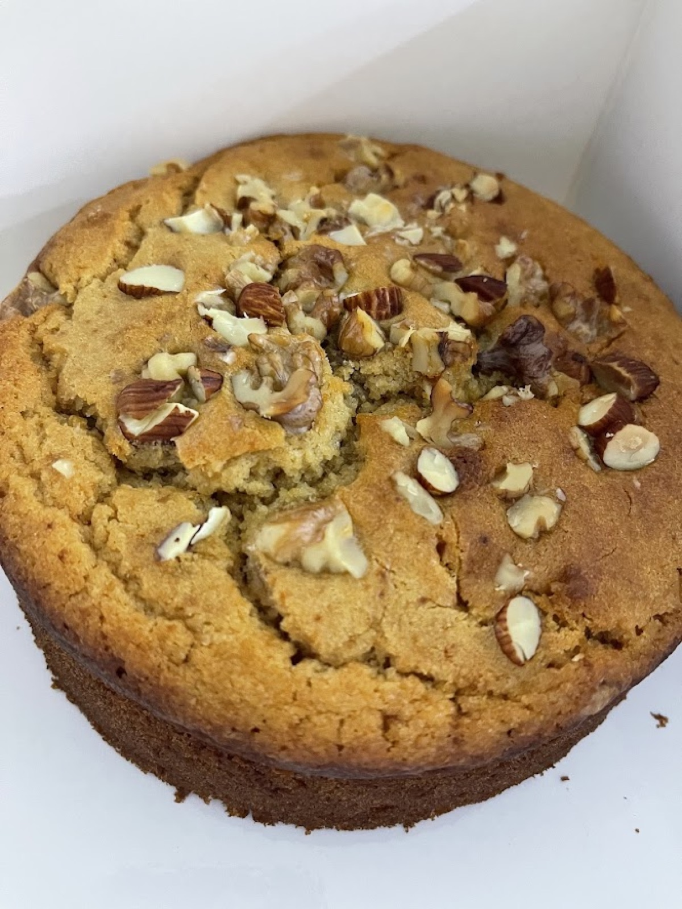
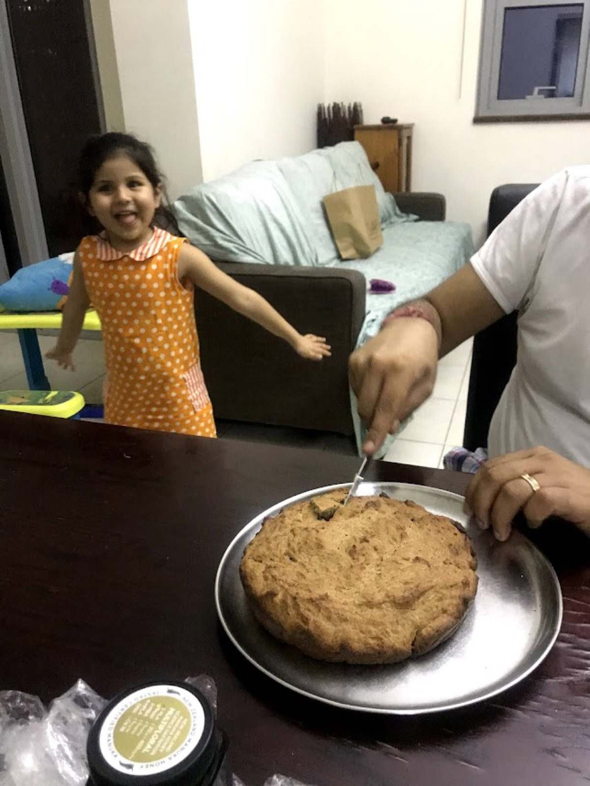
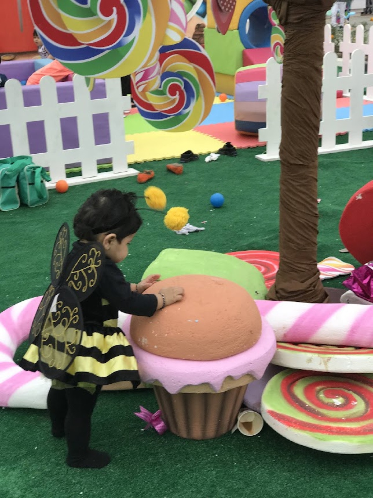

Before there were recipes written down, before ingredients were measured to the gram, before any cake looked like it belonged behind a bakery counter — there was just a little girl on her toes, trying to see over the edge of the counter. That was Vedhica.
She couldn't have told you what she was looking for. She just knew that something was always happening in that room — flour turning into dough, batter turning into cake, ordinary things becoming something else entirely — and she wanted to be close enough to watch it happen.
It Started With Dough
Long before anyone handed her a mixing bowl of her own, Vedhica would stand near her mother while parathas were being made. It wasn't baking. But nobody had explained the difference to her yet, and honestly, she wouldn't have cared.
What caught her was the dough itself — the way it went from a messy, sticky nothing to something soft and smooth under her mother's hands. Flour. Water. A little patience. And suddenly it held together. It became something.

To most people, a kitchen is just a room where food gets made. To a toddler standing at the edge of it, it looked more like a place where things transformed, where hands could turn almost nothing into something. And she wanted in.
Her First Clients Had No Complaints
Eventually, watching stopped being enough.
With her mother and sister close by, guiding more than instructing, Vedhica began making her own small attempts — cakes, cupcakes, whatever the day called for. And every young baker needs someone to bake for, so she found her first clients in the most obvious place a small child would look: her dolls.

Sophie and Lucy didn't care that there was no frosting on top. They didn't notice a lopsided layer or a slightly-too-dense crumb. They just sat there, patient and delighted, while Vedhica decided what they'd be having for their birthday. A cake sat beside a few flowers, and a full-throated round of "Happy Birthday" was sung to two dolls who would never once complain about the presentation.
It's a small memory in the grand scheme of things. But it might be the real beginning — not the first time she watched someone else bake, but the first time baking became about making someone else happy. Even if that someone had a permanently painted-on smile.
The Oops That Didn't Stop Her
Of course, none of this went perfectly. It rarely does at four years old.
There were spills. There were cakes that came out of the oven looking nothing like what she'd pictured — including one now-famous attempt that emerged a little too dark around the edges, the kind of "oops" that gets its own place in the family's kitchen folklore.

She didn't love it in the moment. What four-year-old does? But it also didn't stop her. If anything, every small disaster became one more thing to figure out, one more reason to try again with her mother or sister standing close by, showing her what to do differently next time.
She wasn't just learning how to bake. She was learning, without quite knowing it, that anything worth making takes a few failed attempts first — and that failing at something isn't the same as being finished with it.
The Cake That Takes Her Back
Of everything Vedhica has learned to make since, cake still holds a particular place because it takes her back to those earliest days in the kitchen, when baking wasn't about technique or presentation at all. It was just mixing, waiting, watching the oven light, and finally getting to see what had happened inside.
That's why the first recipe in this journey isn't dressed up with frosting. It's the one she made for her dolls, and some cakes carry their story better plain.
Sophie and Lucy's Birthday Cake
Soft, simple, and a little uneven in places, the kind of cake that feels like the beginning, because it is.

What We Remember
She was too small to do most of it herself. Mostly she wanted the spoon, and that usually meant flour ended up somewhere it shouldn't. This was the cake she asked for when it was Sophie and Lucy's birthday — not a fancy one, just something with candles on it that the dolls could "eat." She helped crack the eggs and stir, and stood on a stool to watch the rest happen. It didn't need to be perfect. It just needed to be theirs.
What You Need
- 1½ cups all-purpose flour
- 1 cup sugar
- ½ cup butter, softened
- 2 eggs
- ½ cup milk
- 1 teaspoon vanilla extract
- 1½ teaspoons baking powder
- A pinch of salt
How We Made It
Ask a grown-up to turn the oven to 180°C and grease a cake tin.
Mix the butter and sugar together until it looks pale and fluffy. Add the eggs one at a time, then stir in the vanilla.
In another bowl, mix the flour, baking powder, and salt. Add this to the butter mixture a little at a time, along with the milk, and stir just until it's all combined — no need to overdo it.
Pour the batter into the tin and pop it in the oven for 30 to 35 minutes, until a toothpick comes out clean. Let it cool before you touch it, however hard that is to wait for.
No frosting. No decoration. Just a cake for two very patient dolls.
What She Took From It
Not a lesson we explained to her in so many words. Just the quiet understanding, repeated enough times, that a cake not turning out right isn't the end of it — it's just the reason you pay closer attention next time.
More Than a Recipe
Today, baking means a lot more to Vedhica than following a set of steps — but the excitement around cake still says it all. It traces back here — to watching before understanding, to dough before dessert, to a few small disasters that never once made her want to stop.
- A little girl trying to see over the counter.
- Dolls waiting patiently for their birthday cake.
- A few "oops" moments that turned into lessons instead of endings.

None of it looked like much at the time. But it was the foundation for everything that came after — because Vedhica didn't fall in love with baking because it went perfectly. She fell in love with it because something always happened when she tried.
And that's still what brings her back to the kitchen today: the same question she's been asking since before she could reach the counter.
What can I make this time?
From Our Memories to Her Story

She isn't the little girl standing on her toes at the counter anymore. Somewhere along the way, those early memories made room for something new. She has opinions about butter temperature now, knows when a cake is under or overmixed, and has started to develop her own sense of what makes a bake worth making. More importantly, she has begun to understand why she wants to bake, and who she wants to share it with.
We can still tell you about those first mornings — the flour, the tiny hands, the burnt cakes, and everything in between. But those are the parts of her story we remember for her. What came after belongs to Vedhica. And from here, it feels right to let her tell it herself.